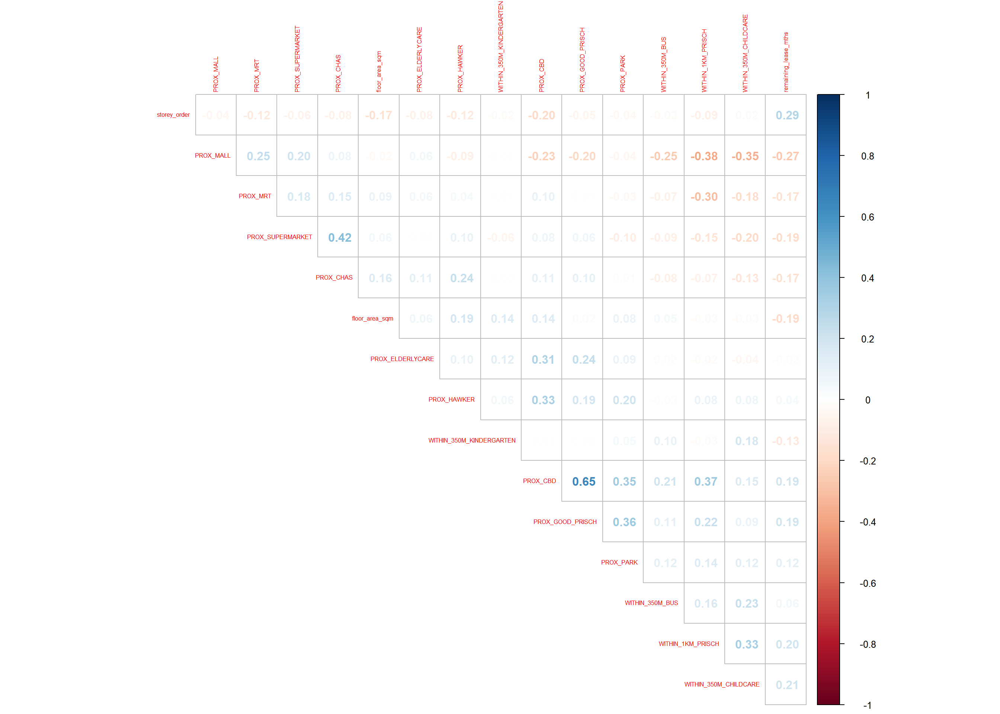
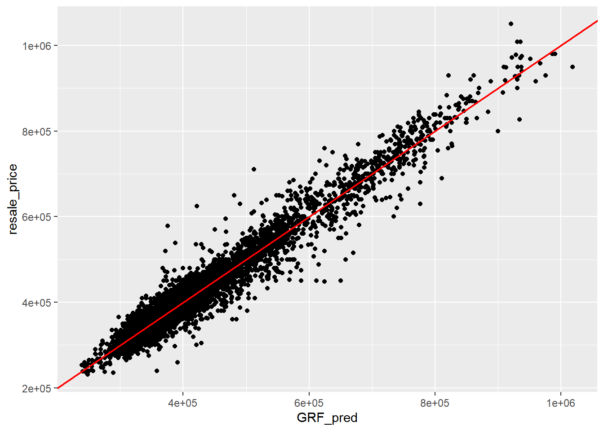

pacman::p_load(sf, spdep, GWmodel, SpatialML,
tmap, rsample, Metrics, tidyverse)08:Geographically Weighted Predictive Models
1 Overview
Predictive modelling uses statistical or machine learning techniques to forecast future events based on known data (predictors and outcomes). In geospatial predictive modelling, the goal is to understand and predict how events occur by incorporating their spatial patterns into the modelling process.
Events should be not randomly or uniformly distributed across space. They are influenced by geospatial factors such as infrastructure, social conditions, and topography (natural landscapes).
By correlating historical event locations with environmental variables, geospatial predictive models capture these spatial constraints and influences.
1.1 Learning Outcomes
By completing this hands-on exercise, we learn to:
- Prepare training and test datasets using appropriate sampling techniques.
- Calibrate predictive models using both geospatial statistical learning and machine learning methods.
- Compare and select the best-performing model.
- Predict future outcomes using the optimised model.
2 The Data
The study integrates both aspatial and geospatial datasets to model HDB resale prices in Singapore.
| Dataset | Description | Format |
|---|---|---|
| Aspatial dataset | HDB Resale data: a list of HDB resale transacted prices in Singapore from Jan 2017 onwards, downloaded from Data.gov.sg. | CSV |
| Geospatial dataset | P14_SUBZONE_WEB_PL: a polygon feature data providing information of URA 2014 Master Plan Planning Subzone boundary data, also downloaded from Data.gov.sg. | ESRI shapefile |
| Locational factors with geographic coordinates | Eldercare centres, Hawker centres ,Parks ,Supermarkets ,CHAS clinics ,Childcare services ,Kindergartens downloaded from Data.gov.sg MRT/LRT stations ,Bus stops downloaded from Datamall.lta.gov.sg, | GeoJSON or Shapefile |
| Locational factors without geographic coordinates | Primary schools, extracted from Data.gov.sg’s school information dataset. CBD coordinates, retrieved from Google. Shopping malls , scraped from Wikipedia. Good primary schools , ranked list of popular schools fromLocal Salary Forum. | CSV |
{tbl-colwidths=“[30,60,10]”}
3 Installing and Loading R packages
There are 8 packages used in this exercise.
| Description | |
|---|---|
| GWmodel | Calibrates geographical weighted family of models |
| rsample | Provides functions to create different types of resamples and corresponding classes for their analysis. |
| sf | Handles importing, managing, and processing vector-based geospatial data |
| tidyverse | A collection of R packages for data wrangling and visualisation, including readr, dplyr, and ggplot2. |
| tmap | Creates cartographic quality static and interactive thematic (choropleth) maps. |
| SpatialML | Allows for a geographically weighted random forest regression including a function to find the optical bandwidth. |
| Metrics | Implements metrics for regression, time series, binary classification, classification, and information retrieval problems. |
| spdep | Provides tools for spatial dependence: building neighbour lists, spatial weights, and spatial autocorrelation analysis. |
{tbl-colwidths=“[15,85]”}
We load the following packages into R environment.
4 Preparing Data
4.1 Reading data file to rds
We first read the input data sets that is saved in simple feature data frame.
mdata <- read_rds("data/rawdata/mdata.rds")colnames(mdata) [1] "resale_price" "floor_area_sqm"
[3] "storey_order" "remaining_lease_mths"
[5] "PROX_CBD" "PROX_ELDERLYCARE"
[7] "PROX_HAWKER" "PROX_MRT"
[9] "PROX_PARK" "PROX_GOOD_PRISCH"
[11] "PROX_MALL" "PROX_CHAS"
[13] "PROX_SUPERMARKET" "WITHIN_350M_KINDERGARTEN"
[15] "WITHIN_350M_CHILDCARE" "WITHIN_350M_BUS"
[17] "WITHIN_1KM_PRISCH" "geometry" glimpse(mdata)Rows: 15,901
Columns: 18
$ resale_price <dbl> 330000, 360000, 370000, 375000, 380000, 38000…
$ floor_area_sqm <dbl> 92, 91, 92, 99, 92, 92, 92, 92, 93, 91, 91, 9…
$ storey_order <int> 1, 3, 1, 2, 2, 4, 3, 2, 4, 3, 3, 3, 4, 3, 2, …
$ remaining_lease_mths <dbl> 684, 738, 733, 700, 715, 732, 706, 745, 731, …
$ PROX_CBD <dbl> 8.824749, 9.841309, 9.560780, 9.609731, 8.351…
$ PROX_ELDERLYCARE <dbl> 0.2514065, 0.6318448, 1.0824168, 0.3473195, 0…
$ PROX_HAWKER <dbl> 0.44182653, 0.26972560, 0.25829513, 0.4364751…
$ PROX_MRT <dbl> 0.6885144, 1.0969096, 0.8862859, 1.4093169, 0…
$ PROX_PARK <dbl> 0.7450859, 0.4294870, 0.7800777, 0.1776163, 0…
$ PROX_GOOD_PRISCH <dbl> 1.2703931, 0.4045792, 2.0942375, 0.1375070, 1…
$ PROX_MALL <dbl> 0.5534331, 1.0677012, 0.9751113, 1.1752392, 1…
$ PROX_CHAS <dbl> 1.364596e-01, 2.569863e-01, 1.906189e-01, 2.9…
$ PROX_SUPERMARKET <dbl> 0.2708222, 0.3101889, 0.3187560, 0.4586748, 0…
$ WITHIN_350M_KINDERGARTEN <int> 1, 1, 1, 1, 1, 1, 1, 1, 1, 0, 1, 1, 1, 1, 1, …
$ WITHIN_350M_CHILDCARE <int> 6, 5, 2, 3, 3, 2, 3, 4, 3, 2, 4, 4, 4, 5, 2, …
$ WITHIN_350M_BUS <int> 8, 8, 8, 7, 6, 9, 6, 6, 5, 4, 10, 5, 6, 9, 8,…
$ WITHIN_1KM_PRISCH <int> 2, 2, 1, 2, 2, 1, 3, 2, 2, 2, 2, 2, 3, 2, 2, …
$ geometry <POINT [m]> POINT (29179.92 38822.08), POINT (28423…4.2 Data Sampling
We split the entire data into 65% training and 35% test by using initial_split() of rsample package, which belongs to tigymodels ecosystem. Then we extract the training set and test set from a data split object created by functions initial_split().
set.seed(1234)
resale_split <- initial_split(mdata, prop = 6.5/10,)
train_data <- training(resale_split)
test_data <- testing(resale_split)We save both files on the disk.
write_rds(train_data, "data/model/train_data.rds")
write_rds(test_data, "data/model/test_data.rds")4.3 Computing Correlation Matrix
Before loading predictor into a predictive model, let’s plot the correlation matrix to check if there is any sign of multicolinearity.
mdata_nogeo <- st_drop_geometry(mdata)
corrplot::corrplot(cor(mdata_nogeo[, 2:17]),
diag = FALSE, # hide diagonal or TRUE
order = "AOE",# angular order of the eigenvectors" /original/AOE/FPC/hclust/alphabet
tl.pos = "td", # text label position: top and diagonal/lt/n null
tl.cex = 0.5, # text label size: shrinks 50%
method = "number", # display number/circle/color/shade/pie
type = "upper") #show only the upper triangle/full/lower
There is no sign of multicolinearity since all correlation values are below 0.8.
5 Retriving the Stored Data
We load the saved data into R.
train_data <- read_rds("data/model/train_data.rds")
test_data <- read_rds("data/model/test_data.rds")6 Building a Non-spatial Multiple Linear Regression
A multiple regression model is built as a base line model.
price_mlr <- lm(resale_price ~ floor_area_sqm + # target ~ independent variables
storey_order + remaining_lease_mths +
PROX_CBD + PROX_ELDERLYCARE + PROX_HAWKER +
PROX_MRT + PROX_PARK + PROX_MALL +
PROX_SUPERMARKET + WITHIN_350M_KINDERGARTEN +
WITHIN_350M_CHILDCARE + WITHIN_350M_BUS +
WITHIN_1KM_PRISCH,
data=train_data)
summary(price_mlr)The regression summary report indicates that the model slightly underestimates HDB resale prices, as shown by the residual median of –1,930. However, the R2 value of 0.7373 suggests that the model explains approximately 74% of the variation in HDB resale prices since 2017, which exhibits good predictive performance overall.
write_rds(price_mlr, "data/model/price_mlr.rds" ) 7 gwr Predictive Method
Next we build and calibrate geographically weighted regression model to preidict HDB resales prices using methods from GWmodel package.
Somehow error occurred in the later step Computing Predicted Values of the Test Data suggests that we need to convert the data to spatial objects first. Convert the training and test data into SpatialPointDateFrame for use in GWR:
train_data_sp <- as(train_data, "Spatial")
test_data_sp <- as(test_data, "Spatial")
train_data_spclass : SpatialPointsDataFrame
features : 10335
extent : 11597.31, 42623.63, 28217.39, 48741.06 (xmin, xmax, ymin, ymax)
crs : +proj=tmerc +lat_0=1.36666666666667 +lon_0=103.833333333333 +k=1 +x_0=28001.642 +y_0=38744.572 +ellps=WGS84 +towgs84=0,0,0,0,0,0,0 +units=m +no_defs
variables : 17
names : resale_price, floor_area_sqm, storey_order, remaining_lease_mths, PROX_CBD, PROX_ELDERLYCARE, PROX_HAWKER, PROX_MRT, PROX_PARK, PROX_GOOD_PRISCH, PROX_MALL, PROX_CHAS, PROX_SUPERMARKET, WITHIN_350M_KINDERGARTEN, WITHIN_350M_CHILDCARE, ...
min values : 218000, 74, 1, 555, 0.999393538715878, 1.98943787433087e-08, 0.0333358643817954, 0.0220407324774434, 0.0441643212802781, 0.0652540365486641, 0, 6.20621206270077e-09, 1.21715176356525e-07, 0, 0, ...
max values : 1186888, 133, 17, 1164, 19.6500691667807, 3.30163731686804, 2.86763031236184, 2.13060636038504, 2.41313695915468, 10.6223726149914, 2.27100643784442, 0.808332738794272, 1.57131703651196, 7, 20, ... test_data_spclass : SpatialPointsDataFrame
features : 5566
extent : 11597.31, 42623.63, 28287.8, 48669.59 (xmin, xmax, ymin, ymax)
crs : +proj=tmerc +lat_0=1.36666666666667 +lon_0=103.833333333333 +k=1 +x_0=28001.642 +y_0=38744.572 +ellps=WGS84 +towgs84=0,0,0,0,0,0,0 +units=m +no_defs
variables : 17
names : resale_price, floor_area_sqm, storey_order, remaining_lease_mths, PROX_CBD, PROX_ELDERLYCARE, PROX_HAWKER, PROX_MRT, PROX_PARK, PROX_GOOD_PRISCH, PROX_MALL, PROX_CHAS, PROX_SUPERMARKET, WITHIN_350M_KINDERGARTEN, WITHIN_350M_CHILDCARE, ...
min values : 230888, 74, 1, 546, 1.00583660772922, 3.34897933104965e-07, 0.0474019664161957, 0.0414043955932523, 0.0502664084494264, 0.0907500295577619, 0, 4.55547870890763e-09, 1.21715176356525e-07, 0, 0, ...
max values : 1050000, 138, 14, 1151, 19.632402730488, 3.30163731686804, 2.83106651960209, 2.13060636038504, 2.41313695915468, 10.6169590126272, 2.26056404492346, 0.79249074802552, 1.53786629004208, 7, 16, ... 7.1 Computing Adaptive Bandwidth
We use the bw.gwr() function from the GWmodel package to determine the optimal bandwidth. The “CV” (Cross Validation) method is chosen for calibration because, between the two available options “CV” and “AIC”, the CV method generally produces a smaller bandwidth, allowing the model to capture more local variation in the data.
The code chunk below computes and saves the optimal bandwidth. The search can be time consuming and computationally intensive.
bw_adaptive <- bw.gwr(
formula = resale_price ~ floor_area_sqm +
storey_order + remaining_lease_mths +
PROX_CBD + PROX_ELDERLYCARE + PROX_HAWKER +
PROX_MRT + PROX_PARK + PROX_MALL +
PROX_SUPERMARKET + WITHIN_350M_KINDERGARTEN +
WITHIN_350M_CHILDCARE + WITHIN_350M_BUS +
WITHIN_1KM_PRISCH,
data=train_data_sp,
approach="CV",
kernel="gaussian",
adaptive=TRUE,
longlat=FALSE)write_rds(bw_adaptive, "data/model/bw_adaptive.rds")After a few couple of teas, we’ve found optimal bandwidth is 40 neighour points.
7.2 Constructing the Adaptive Bandwidth GWR Model
We first re-load the data into R.
bw_adaptive <- read_rds("data/model/bw_adaptive.rds")bw_adaptive[1] 40Then we build the GWR-based hedonic pricing model using adaptive bandwidth and Gaussian kernel. Same reason as the previous step, we save a copy of the gwrm file.
gwr_adaptive <- gwr.basic(
formula = resale_price ~ floor_area_sqm +
storey_order + remaining_lease_mths +
PROX_CBD + PROX_ELDERLYCARE +
PROX_HAWKER + PROX_MRT + PROX_PARK +
PROX_MALL + PROX_SUPERMARKET +
WITHIN_350M_KINDERGARTEN +
WITHIN_350M_CHILDCARE +
WITHIN_350M_BUS + WITHIN_1KM_PRISCH,
data=train_data_sp,
bw=bw_adaptive,
kernel = 'gaussian',
adaptive=TRUE,
longlat = FALSE)
write_rds(gwr_adaptive,
"data/model/gwr_adaptive.rds")7.3 Retrieve gwr Output Object
We re-load the saved gwrm object and retrieve the report of model output.
gwr_adaptive <- read_rds("data/model/gwr_adaptive.rds")gwr_adaptive ***********************************************************************
* Package GWmodel *
***********************************************************************
Program starts at: 2025-10-22 22:00:33.551728
Call:
gwr.basic(formula = resale_price ~ floor_area_sqm + storey_order +
remaining_lease_mths + PROX_CBD + PROX_ELDERLYCARE + PROX_HAWKER +
PROX_MRT + PROX_PARK + PROX_MALL + PROX_SUPERMARKET + WITHIN_350M_KINDERGARTEN +
WITHIN_350M_CHILDCARE + WITHIN_350M_BUS + WITHIN_1KM_PRISCH,
data = train_data.sp, bw = bw_adaptive, kernel = "gaussian",
adaptive = TRUE, longlat = FALSE)
Dependent (y) variable: resale_price
Independent variables: floor_area_sqm storey_order remaining_lease_mths PROX_CBD PROX_ELDERLYCARE PROX_HAWKER PROX_MRT PROX_PARK PROX_MALL PROX_SUPERMARKET WITHIN_350M_KINDERGARTEN WITHIN_350M_CHILDCARE WITHIN_350M_BUS WITHIN_1KM_PRISCH
Number of data points: 10335
***********************************************************************
* Results of Global Regression *
***********************************************************************
Call:
lm(formula = formula, data = data)
Residuals:
Min 1Q Median 3Q Max
-205193 -39120 -1930 36545 472355
Coefficients:
Estimate Std. Error t value Pr(>|t|)
(Intercept) 107601.073 10601.261 10.150 < 2e-16 ***
floor_area_sqm 2780.698 90.579 30.699 < 2e-16 ***
storey_order 14299.298 339.115 42.167 < 2e-16 ***
remaining_lease_mths 344.490 4.592 75.027 < 2e-16 ***
PROX_CBD -16930.196 201.254 -84.124 < 2e-16 ***
PROX_ELDERLYCARE -14441.025 994.867 -14.516 < 2e-16 ***
PROX_HAWKER -19265.648 1273.597 -15.127 < 2e-16 ***
PROX_MRT -32564.272 1744.232 -18.670 < 2e-16 ***
PROX_PARK -5712.625 1483.885 -3.850 0.000119 ***
PROX_MALL -14717.388 2007.818 -7.330 2.47e-13 ***
PROX_SUPERMARKET -26881.938 4189.624 -6.416 1.46e-10 ***
WITHIN_350M_KINDERGARTEN 8520.472 632.812 13.464 < 2e-16 ***
WITHIN_350M_CHILDCARE -4510.650 354.015 -12.741 < 2e-16 ***
WITHIN_350M_BUS 813.493 222.574 3.655 0.000259 ***
WITHIN_1KM_PRISCH -8010.834 491.512 -16.298 < 2e-16 ***
---Significance stars
Signif. codes: 0 '***' 0.001 '**' 0.01 '*' 0.05 '.' 0.1 ' ' 1
Residual standard error: 61650 on 10320 degrees of freedom
Multiple R-squared: 0.7373
Adjusted R-squared: 0.737
F-statistic: 2069 on 14 and 10320 DF, p-value: < 2.2e-16
***Extra Diagnostic information
Residual sum of squares: 3.922202e+13
Sigma(hat): 61610.08
AIC: 257320.2
AICc: 257320.3
BIC: 247249
***********************************************************************
* Results of Geographically Weighted Regression *
***********************************************************************
*********************Model calibration information*********************
Kernel function: gaussian
Adaptive bandwidth: 40 (number of nearest neighbours)
Regression points: the same locations as observations are used.
Distance metric: Euclidean distance metric is used.
****************Summary of GWR coefficient estimates:******************
Min. 1st Qu. Median 3rd Qu.
Intercept -3.2111e+08 -4.7727e+05 -8.3004e+03 5.5025e+05
floor_area_sqm -2.8714e+04 1.4475e+03 2.3011e+03 3.3900e+03
storey_order 3.3186e+03 8.5899e+03 1.0826e+04 1.3397e+04
remaining_lease_mths -1.4431e+03 2.6063e+02 3.9048e+02 5.2865e+02
PROX_CBD -1.0837e+07 -5.7697e+04 -1.3787e+04 2.6552e+04
PROX_ELDERLYCARE -3.1896e+07 -4.0643e+04 1.0562e+04 6.1054e+04
PROX_HAWKER -2.3985e+08 -5.1365e+04 3.0026e+03 6.4287e+04
PROX_MRT -1.1544e+07 -1.0488e+05 -4.9373e+04 5.1037e+03
PROX_PARK -6.5961e+06 -4.8671e+04 -8.8128e+02 5.3498e+04
PROX_MALL -1.8113e+07 -7.4238e+04 -1.3982e+04 4.9779e+04
PROX_SUPERMARKET -4.5761e+06 -6.3461e+04 -1.7429e+04 3.5616e+04
WITHIN_350M_KINDERGARTEN -4.1638e+05 -6.0040e+03 9.0209e+01 4.7127e+03
WITHIN_350M_CHILDCARE -1.0273e+05 -2.2375e+03 2.6668e+02 2.6388e+03
WITHIN_350M_BUS -1.1757e+05 -1.4719e+03 1.1626e+02 1.7584e+03
WITHIN_1KM_PRISCH -6.6465e+05 -5.5959e+03 2.6916e+02 5.7500e+03
Max.
Intercept 1.6493e+08
floor_area_sqm 5.0908e+04
storey_order 2.9537e+04
remaining_lease_mths 1.8119e+03
PROX_CBD 2.2166e+07
PROX_ELDERLYCARE 8.2445e+07
PROX_HAWKER 5.9654e+06
PROX_MRT 2.0189e+08
PROX_PARK 1.5072e+07
PROX_MALL 1.0443e+07
PROX_SUPERMARKET 3.8330e+06
WITHIN_350M_KINDERGARTEN 6.6799e+05
WITHIN_350M_CHILDCARE 1.0802e+05
WITHIN_350M_BUS 3.7313e+04
WITHIN_1KM_PRISCH 5.0133e+05
************************Diagnostic information*************************
Number of data points: 10335
Effective number of parameters (2trace(S) - trace(S'S)): 1730.101
Effective degrees of freedom (n-2trace(S) + trace(S'S)): 8604.899
AICc (GWR book, Fotheringham, et al. 2002, p. 61, eq 2.33): 238871.8
AIC (GWR book, Fotheringham, et al. 2002,GWR p. 96, eq. 4.22): 237036.9
BIC (GWR book, Fotheringham, et al. 2002,GWR p. 61, eq. 2.34): 238209
Residual sum of squares: 4.829176e+12
R-square value: 0.9676571
Adjusted R-square value: 0.9611535
***********************************************************************
Program stops at: 2025-10-22 22:01:48.29539 The report reads that R2 value has increased from 0.7373 to 0.9677 indicating model’s fit has substantially proved and information loss has decresed as AICc down from 257320.3 to 238871.8.
7.4 Computing Adaptive Bandwidth for the Test Data
gwr_bw_test_adaptive <- bw.gwr(
formula = resale_price ~ floor_area_sqm +
storey_order + remaining_lease_mths +
PROX_CBD + PROX_ELDERLYCARE + PROX_HAWKER +
PROX_MRT + PROX_PARK + PROX_MALL +
PROX_SUPERMARKET + WITHIN_350M_KINDERGARTEN +
WITHIN_350M_CHILDCARE + WITHIN_350M_BUS +
WITHIN_1KM_PRISCH,
data=test_data_sp,
approach="CV", # note we use approach="CV" compared with bw=bw_adaptive in training
kernel="gaussian",
adaptive=TRUE,
longlat=FALSE)
write_rds(gwr_bw_test_adaptive,
"data/model/gwr_bw_test_adaptive.rds")After a bit of scrolling, cross-validation determines the optimal adaptive bandwidth is 25 for the test set.
7.5 Computing Predicted Values of the Test Data
We still encountered an error inv(): matrix is singular when computing the predictions.
gwr_pred <- gwr.predict(
formula = resale_price ~
floor_area_sqm + storey_order +
remaining_lease_mths + PROX_CBD +
PROX_ELDERLYCARE + PROX_HAWKER +
PROX_MRT + PROX_PARK + PROX_MALL +
PROX_SUPERMARKET + WITHIN_350M_KINDERGARTEN +
WITHIN_350M_CHILDCARE + WITHIN_350M_BUS +
WITHIN_1KM_PRISCH,
data=train_data_sp,
predictdata = test_data_sp,
bw=25,
kernel = 'gaussian',
adaptive=TRUE,
longlat = FALSE)
write_rds(gwr_pred,
"data/model/gwr_pred.rds")8 Calibrating Random Forest Model
Next we calibrate the model by using random forest function from ranger package.
8.1 Preparing Coordinates Data
First we calculate x,y coordinates matrix for whole dataset, and training and test sets, and save them on the disk.
train_data <- read_rds("data/model/train_data.rds")
test_data <- read_rds("data/model/test_data.rds")coords <- st_coordinates(mdata)
coords_train <- st_coordinates(train_data)
coords_test <- st_coordinates(test_data)coords_train <- write_rds(coords_train, "data/geospatial/coords_train.rds" )
coords_test <- write_rds(coords_test, "data/geospatial/coords_test.rds" )8.2 Dropping Geometry Field
The geometry column should be removed since it is not required for the upcoming analysis. The code chunk below uses st_drop_geometry() function from the sf package to drop the geometry.
train_data_nogeom <- train_data %>% st_drop_geometry()
test_data_nogeom <- test_data %>% st_drop_geometry()8.3 Calibrating a Non-spatial Random Forest Model
set.seed(1234)
rf <- ranger(
formula = resale_price ~ floor_area_sqm +
storey_order + remaining_lease_mths +
PROX_CBD + PROX_ELDERLYCARE +
PROX_HAWKER + PROX_MRT + PROX_PARK +
PROX_MALL + PROX_SUPERMARKET +
WITHIN_350M_KINDERGARTEN +
WITHIN_350M_CHILDCARE +
WITHIN_350M_BUS +
WITHIN_1KM_PRISCH,
data=train_data_nogeom)
rfThe Ranger result shows our R2 value is 0.9496 that is much higher than non-spatial regression model.
write_rds(rf, "data/model/rf.rds")9 Calibrating Geographical Weighted Random Forest Model
Next we grf() of SpatialML package to calibrate a geographic random forest model.
9.1 Calibrating Using Training Data
We apply grf() of SpatialML package to calibrate model on training data.
set.seed(1234)
gwRF_adaptive <- grf(
formula = resale_price ~ floor_area_sqm +
storey_order + remaining_lease_mths +
PROX_CBD + PROX_ELDERLYCARE +
PROX_HAWKER + PROX_MRT + PROX_PARK +
PROX_MALL + PROX_SUPERMARKET +
WITHIN_350M_KINDERGARTEN +
WITHIN_350M_CHILDCARE +
WITHIN_350M_BUS + WITHIN_1KM_PRISCH,
dframe=train_data_nogeom,
bw=40,
kernel="adaptive",
coords=coords_train)R2 on the training set is 0.9515.
We again save the new model on training data.
write_rds(gwRF_adaptive, "data/model/gwRF_adaptive.rds")Then we retrieve the model for next steps.
gwRF_adaptive <- read_rds("data/model/gwRF_adaptive.rds")9.2 Predicting by Using Test Data
9.2.1 Preparing the Test Data
We use cbind() to combine test_data and coords_test and remove the geometry.
test_data_nogeom <- cbind(test_data, coords_test)%>%
st_drop_geometry()9.2.2 Predicting with Test Data
We use predict.grf() of SpatialML package to predict the resale price using gwPF_adaptive model on the test data.
gwRF_pred <- predict.grf(gwRF_adaptive,
test_data_nogeom,
x.var.name="X",
y.var.name="Y",
local.w=1,
global.w=0)GRF_pred <- write_rds(gwRF_pred, "data/model/GRF_pred.rds")9.2.3 Converting the Predicting Output into a data.frame
We reload the saved predicting output (generated from predict.grf() in the previous step) back to R and convert it into a data frame for further study since the original output is in numeric format.
GRF_pred <- read_rds("data/model/GRF_pred.rds")
GRF_pred_df <- as.data.frame(GRF_pred)glimpse(GRF_pred_df)Rows: 5,566
Columns: 1
$ GRF_pred <dbl> 384349.1, 352091.0, 413359.4, 375758.8, 419446.1, 379228.8, 3…To compare the actual and predicted, we combine the with GRF_pred_df and select required columns: resale_pricein test_data and GRF_pred the column where predicting outputs are in GRF_pred_df into a new data frame called test_data_p and save it on the disk.
test_data_p <- cbind(test_data, GRF_pred_df) %>%
select(resale_price, GRF_pred)
glimpse(test_data_p)Rows: 5,566
Columns: 3
$ resale_price <dbl> 360000, 370000, 375000, 380000, 385000, 395000, 395000, 4…
$ GRF_pred <dbl> 384349.1, 352091.0, 413359.4, 375758.8, 419446.1, 379228.…
$ geometry <POINT [m]> POINT (28423.42 39745.94), POINT (30550.38 39588.77…write_rds(test_data_p,"data/model/test_data_p.rds")9.2.4 Calculating Root Mean Square Error
To measure the difference between actual and predicted in the regression model, we use rmse() of Metrics package to compute the Root Mean Square Error (RMSE). The RMSE is 28160.87 for this GWR model.
rmse(test_data_p$resale_price, test_data_p$GRF_pred)[1] 28160.879.2.5 Visualising the Predicted Values
Here, we employ a scatterplot to visualise how far the predicted values deviate from the actual ones using the functions geom_point() and ggplot().
For the reference line, we use geom_abline() to create a 45-degree line in the positive quadrant by setting the arguments slope = 1 and intercept = 0. To customise the line style, we can specify the linetype argument using numeric values or their names: 0: blank 1: solid (default) 2: dashed 3: dotted 4: dotdash 5: longdash 6: twodash
ggplot(data = test_data_p, aes(x= GRF_pred, y = resale_price)) +
geom_point() +
geom_abline(slope = 1, intercept = 0, color = "red", linetype = 1, size = 0.8)
The general rule for evaluating model performance is that the closer the scatter points are to the diagonal line, the better the model predicts. In addition, potential outliers can be identified from the scatterplot if required, for example when points deviate significantly from the diagonal line.
In this case, we observed that most of the predicted and actual values are located close to the reference line in red.
10 Reference
Kam, T. S. 14 Geographically Weighted Predictive Models. R for Geospatial Data Science and Analytics. https://r4gdsa.netlify.app/chap14.html